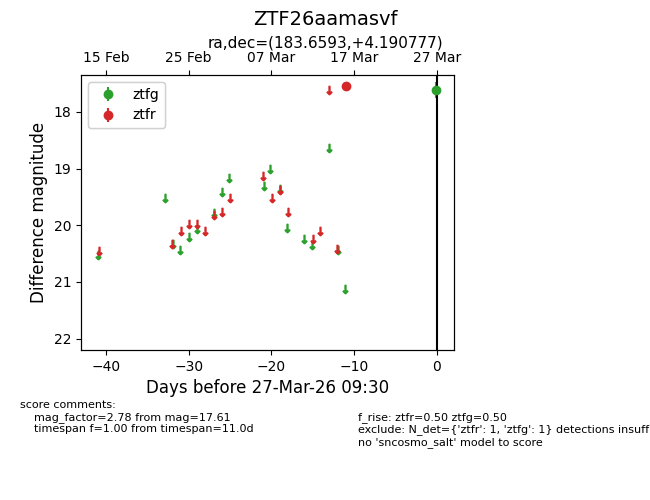
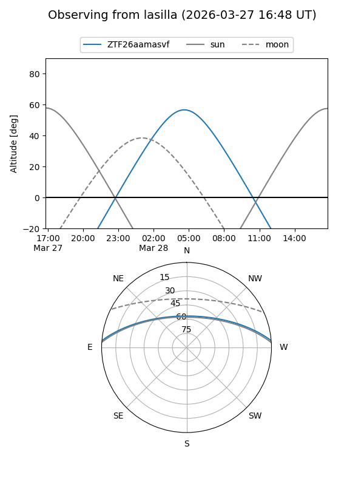
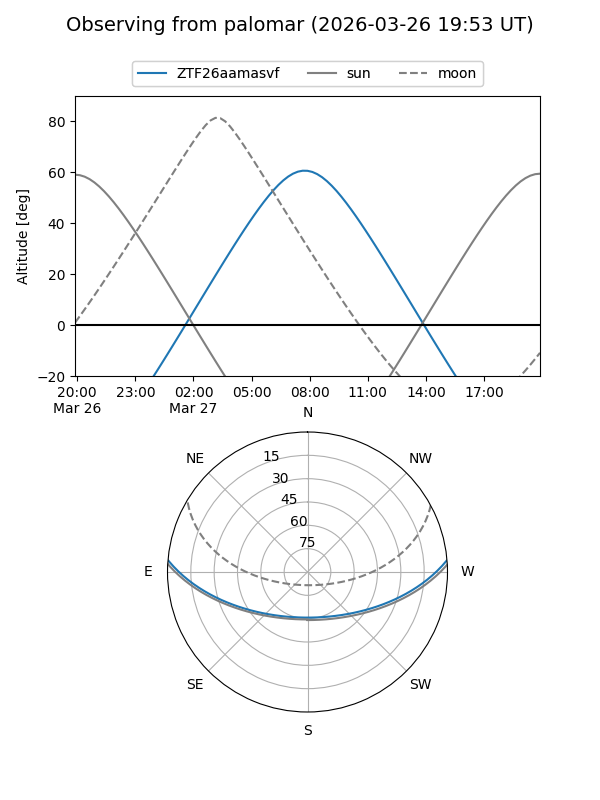

ZTF26aamasvf
Target ZTF26aamasvf at 2026-03-27 09:33
Aliases and brokers:
FINK: link
Lasair: link
ALeRCE: link
alt names
ZTF26aamasvf (ztf,fink_ztf)
Coordinates:
equatorial (ra, dec) = 183.6593,+4.19078
equatorial (HMS+DMS) = 12:14:38.24,+04:11:26.80
galactic (l, b) = (280.3746,+65.43805)
Flags:
Photometry:
last ztfg=17.61, ztfr=17.55
1 ztfg, 1 ztfr detections
Lightcurve

Visibility


Additional plots